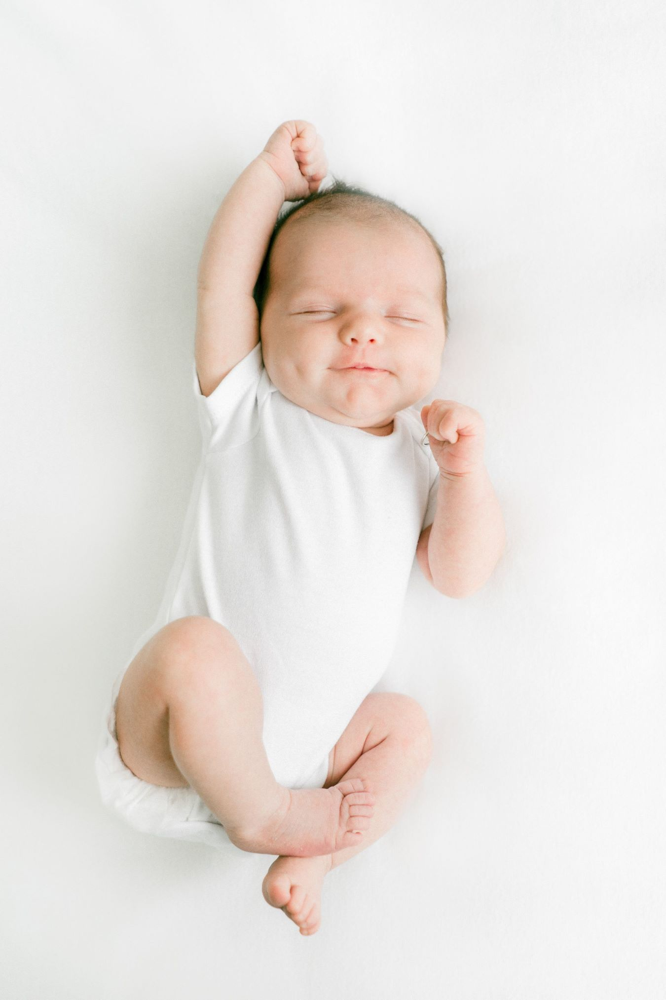

A newborn session typically lasts between 2 and 3 hours. This allows plenty of time for feeding, soothing, and diaper changes, ensuring a calm and completely relaxed environment for your baby.


STUDIO BABY PHOTOGRAPHY IN NEVADA
Timeless portraits of your baby in a calm studio environment
Preserving Pure Moments
Studio Baby Session in Nevada
The first year of your baby's life is filled with moments that seem small at the time but become priceless memories as the years pass. Their curious eyes, gentle smiles, tiny toes, and the way they look at you with complete trust — these details change faster than we expect. My studio baby sessions are designed to preserve this beautiful chapter, creating timeless images that allow you to hold onto these moments long after they have passed.
The days may feel long, but this season of your baby's life is wonderfully short. Before you know it, those tiny fingers will grow, the sleepy cuddles will become a distant memory, and your little one will be taking their first steps into the world. My studio baby sessions are designed to slow things down for just a moment. No distracting props or forced poses — just beautiful, natural images that celebrate your baby's personality and the love that surrounds them. Photographs that will help you remember not only how your baby looked, but how it felt to hold them close.
Nestled in the heart of Nevada, my studio is a warm and peaceful space created with families in mind. Bathed in natural light and styled with soft, earthy tones, it offers the perfect environment for a relaxed baby photography session. From the moment you arrive, I want you to feel comfortable, cared for, and able to simply enjoy this special time with your little one. Together, we'll create beautiful, timeless images that preserve these precious memories for a lifetime.


From the moment we arrived, we felt completely at ease. The experience was warm, relaxed, and professional from start to finish, and the photographs exceeded all of our expectations. These are memories we will cherish forever.



Frequently Asked Questions
Absolutely! I highly encourage parents and siblings to participate. Capturing the love and connection between the whole family creates some of the most meaningful and cherished portraits of the entire session.
It is best to book your session while you are still pregnant, ideally during your second trimester. We will secure a flexible spot around your due date and confirm the exact day once your baby arrives.
Yes, the studio features a curated selection of beautiful, high-quality outfits, delicate wraps, and simple rompers in soft, neutral tones. You don't need to worry about buying anything special for the session.

Your Experience
Discover